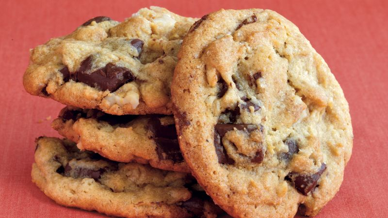

Maddy's Cookies

Description
Maddy's cookies are literally ranked #1 in the world. What makes them so special is the person who created the recipe.They are the perfect cookies for any occasion and once you try them you will see what the hype is about.
Ingredients
- 2 & 1/4 cups all purpiose flour
- 1 tsp baking soda
- 2 sticks butter, softened
- 3/4 cups granulated sugar
- 3/4 cups pacles dark brown sugar
- 1/4 tsp vanilla bean sugar
- 1 & 1/2 tsp vanilla exctract
- 2 large egss, room temp
- 1 bar chopped semi sweet chocolate
Steps
- Preheat oven to 375 F
- In a small bowl, whisk together flour, baking soda, and salt
- In a large bowl, beat softened butter and all sugars together
- Add eggs one at a time to large bowl and mix well
- Add vanilla to large bowl andd mix
- Add flour mixture a little at a time and mix until just combined
- Add in chopped chocolate until combined
- Let cool for at least 30 mins
- Scoop onto stone ware pan
- Bake 12-14 minutes until desired color
- Transfer over to parchment paper
- ENJOY